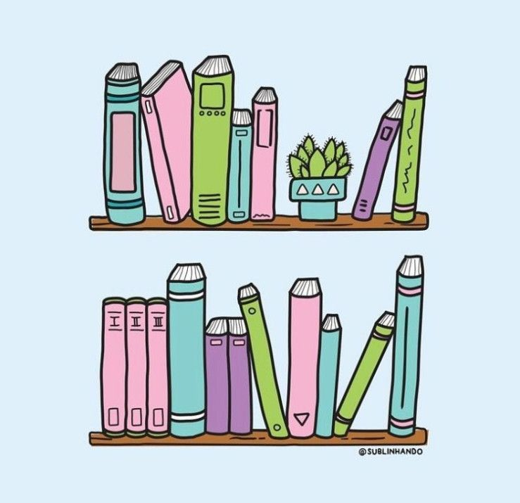
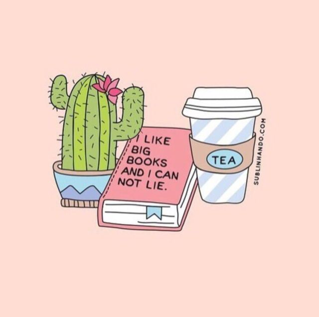

Sejam bem vindos ao meu blog , o blog literario mais atualizado sobre livros! Aqui atualizarei sobre dicas,resenhas e curiosidades de vários livros diferentes
Bem primeiramente oque é um livro em contexto :livro. A palavra livro provém do latim liber, um termo relacionado com a cortiça da árvore. Um livro é um conjunto de folhas de papel ou de qualquer outro material semelhante que, uma vez encadernadas, formam um volume. De acordo com a UNESCO, um livro deve conter pelo menos 50 folhas. Caso contrário, é considerado um folheto.
Existem vários generos de livros em que podemos citar:Romance,Aventura,Fantasia,Suspense,terror e eu irei apresentar eles para vocês.
Romance:
Romance é a forma literária pertencente ao gênero narrativo e que apresenta uma história completa composta por enredo, temporalidade, ambientação e personagens definidos de maneira clara.
É oriundo dos contos épicos e revela ações em conjunto com a distribuição de personagens ao longo da trama. Entre as características marcantes desse gênero está a proximidade com a realidade.
Aventura:
Os livros de aventura apresentam tramas rápidas e de pacotes de ação, e um herói que precisa completar uma missão ou jornada inesperada em um curto período de tempo. Freqüentemente, o personagem principal tem a tarefa de salvar outra pessoa ou lutar contra algo maligno e assustador, e o acaso desempenha um grande papel no que acontece ao longo da história. As histórias de aventura geralmente acontecem em algum lugar intrigante, com cenários emocionantes que atraem o leitor. A jornada do herói tem um clímax emocionante, sacrifício, cenários perigosos e um protagonista e antagonista. Às vezes, as histórias de aventura têm personagens, cenários e enredos realistas, e às vezes podem ser mais uma aventura de fantasia.
Fantasia:
Segundo a definição do iDicionário Aulete, fantasia, enquanto gênero, significa “obra artística (livro, pintura etc.) sem ligação com a realidade”. Quando relacionada ao mundo das artes, a fantasia é considerada um gênero que faz uso da magia e de outros elementos sobrenaturais como peças importantes que permeiam uma obra. A fantasia distingue-se da ficção científica e do horror de três formas: temática individual do autor, atmosfera criada e aspecto geral.

Suspense:
O gênero suspense tem sua origem atrelada aos textos jornalísticos de publicações inglesas (século XIX) que abordam tragédias e crimes não solucionados. Os norte-americanos aprimoram as notícias inglesas incluindo em seu enredo a figura do policial, do ex-condenado, mas é com o escritor Edgar Allan Poe que as narrativas de suspense ganham contornos literários.
Poe cria a figura do detetive como protagonista de seus textos policiais. O investigador é o responsável por conduzir o leitor por um labirinto repleto de mistério e suspense, elementos que ajudam a manter a atenção dos leitores.
O suspense prende a atenção porque tudo o que acontece posteriormente na trama está diretamente relacionado com o que se apresenta anteriormente, isto é, diante de um assassinato o esperado é a sua resolução, mas para entender o desfecho, é necessário retomar os fios inicias que antecedem ao crime, mas que só são revelados a posteriori.
Terror:
O gênero de terror ou horror na literatura tem a intenção ou capacidade de atemorizar ou assustar os seus leitores, através da inclusão de sentimentos de horror e terror. Em suas diversas manifestações, é natural a existência de uma assustadora atmosfera de estranheza. O terror pode ser tanto sobrenatural, como não-sobrenatural. Comumente a central ameaça por trás de uma obra de ficção de terror pode ser interpretada como uma metáfora para os grandes medos da sociedade.
Como comprar economizar na hora de comprar livros?
Existem muitos jeitos de econônizar na hora de comprar livros e aqui apresentarei pra vocês diferentes formas:
1- Comprar na nossa lojinha: A nossa lojinha contêm vários tipos de livros e gêneros diferentes todos com um preço acessível
2-Promoções:Quem não ama um bom desconto, não é mesmo? E se for em livros então, melhor ainda. Minha primeira dica é a de você ficar sempre de olho nos sites que vendem livros para ver quando haverá uma boa promoção deles. Em algumas épocas do ano é bem comum ter esse bota-fora de livros, sobretudo na Black Friday que já é mês que vem, e no Natal. Uma dica é se cadastrar paara receber as newsletter de cada site, assim você fica sabendo antes de todo mundo daquela promoção específica (e pode comprar antes que acabem os estoques)
3-Cupons de desconto:Uma das melhores coisas que as lojas online trouxeram foi poder usar cupons de desconto na hora de finalizar a sua compra. O produto já está barato, daí você consegue um cupom e ele fica mais barato ainda, é maravilhoso! Um site que eu recomendo para buscar esses cupons é o Cupom Válido. Nele você encontra cupons para o principais sites que vendem livros no país e são os que eu mais gosto de comprar: Submarino, Saraiva, Amazon, entre outros. Além dessas, tem também outras lojas de diversos segmentos, vale a pena conferir antes de fechar a compa.
4- Feiras de livros:Essa é uma dica que eu sou super fã! Amo uma Bienal e feiras do livro daqui da minha cidade. Sempre tem uns livros que desejo há tempos por um preçço bem barato, além de me divertir passando uma tarde inteira rodeado de livros incríveis, é maravilhoso!
5-Sebos e troca de livros:Uma ótima opção também é visitar sebos da sua cidade. Já fiz compras e trocas de livros muito bons neles, a preços muito baratos. Aqui em Recife temos uma praça só deles no centro da cidade, mas você pode procurar na internet o que fica mais perto da sua casa.